<!DOCTYPE html><html lang="null"><head><meta http-equiv="content-type" content="text/html; charset=utf-8"><meta content="width=device-width, initial-scale=1.0, maximum-scale=1.0, user-scalable=0" name="viewport"><meta content="yes" name="apple-mobile-web-app-capable"><meta content="black-translucent" name="apple-mobile-web-app-status-bar-style"><meta content="telephone=no" name="format-detection"><meta name="renderer" content="webkit"><title>破解小程序TraceMe - 土豆儿的博客</title><meta name="description" content="首先运行样本，随机输入字符串，我们得到：用IDA加载样本，shift+F12，查找字符串。通过观察，很容易想到里面是否有我们输入的字符串或者是MessageBoxA字符。我们很快发现了里面有MessageBoxA字符，但没有其他的信息，比如”TrackMe”或者是之前输入的字符串。双击该字符，通过浏"><link type="text/css" rel="stylesheet" href="/css/basic.css?v=0.0.0"><link type="text/css" rel="stylesheet" href="/css/pure.css?v=0.0.0"><link type="text/css" rel="stylesheet" href="/css/style.css?v=0.0.0"><script type="text/javascript" src="//cdn.bootcss.com/jquery/1.11.0/jquery.min.js"></script></head></html><body><div class="body_container"><div id="header"><div class="site-name"><h1 class="hidden">破解小程序TraceMe</h1><a id="logo" href="/.">土豆儿的博客</a></div><div id="nav-menu"><div class="bitcron_nav"><div class="site_nav_wrap"><div class="site_nav"><span class="a_container"><a href="/." class="selected active current">首页</a></span><span class="a_container"><a href="/archives/">归档</a></span></div></div></div></div></div><div id="layout" class="pure-g"><div class="pure-u-1 pure-u-md-3-4"><div class="content_container"><div class="post"><h1 class="post-title">破解小程序TraceMe</h1><div class="post-meta">Jul 20, 2017<script src="https://dn-lbstatics.qbox.me/busuanzi/2.3/busuanzi.pure.mini.js" type="text/javascript"></script><span class="meta-space">  |  </span><span id="busuanzi_container_page_pv"><span id="busuanzi_value_page_pv"></span><span> 浏览</span></span></div><div class="post-content"><p>首先运行样本，随机输入字符串，我们得到：<br></p>
<p>用IDA加载样本，shift+F12，查找字符串。通过观察，很容易想到里面是否有我们输入的字符串或者是MessageBoxA字符。我们很快发现了里面有MessageBoxA字符，但没有其他的信息，比如”TrackMe”或者是之前输入的字符串。<br>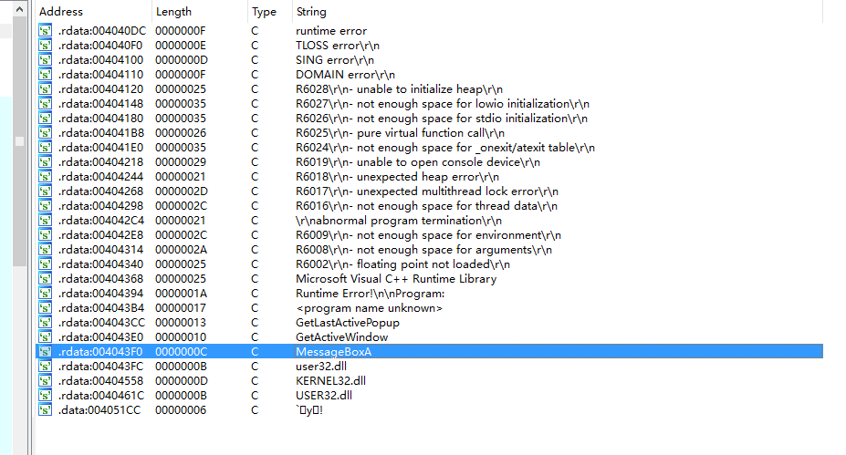</p>
<p>双击该字符，通过浏览，看到”lstrcpyA”，如果你破解过多个该类型的小程序，你会发现这正是两个字符相比较的信号。<br>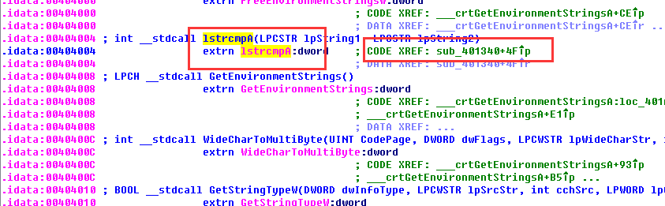</p>
<p>双击旁边的”CODE XREF: sub_401340+4F”,进入该函数，按”Tab”键，进入反汇编，但并没有什么有用的信息。但是我们得到了调用”lstrcpyA”的位置：”0040138F”，由此用OD找到此处，在此处下断点进行调试。<br>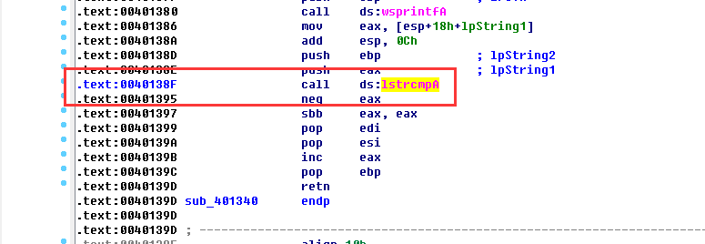</p>
<p>“Ctrl+G”,找到该位置，F2下断点，F9运行：<br>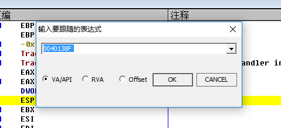<br>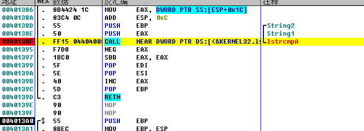<br>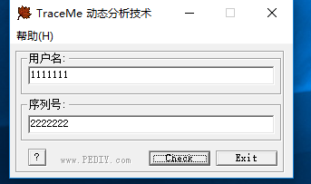</p>
<p>注意看到堆栈处，”String1 = “2222222”和”String2 = 2450”.回想到我们之前输入的用户名”1111111”和序列号”2222222”,它们之间会有什么联系呢？<br>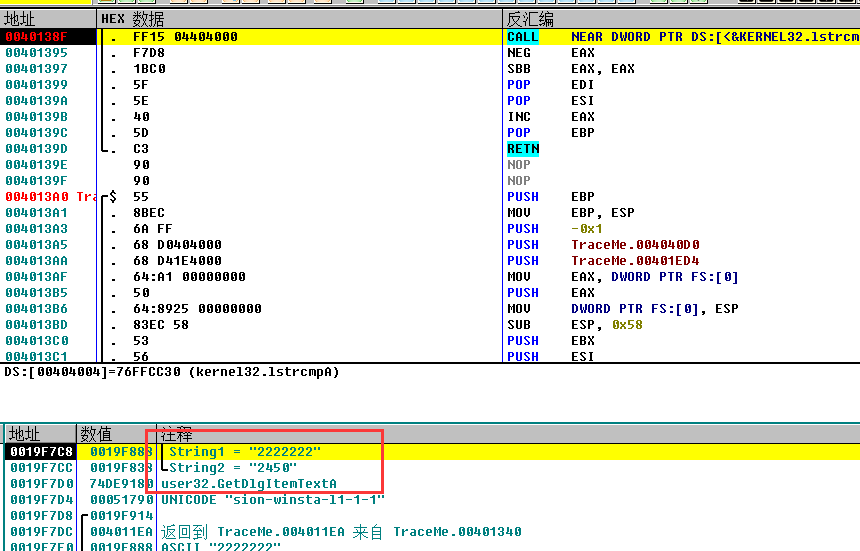</p>
<p>为了验证这个问题，可以用OD再次调试，输入不同的应户名和序列号，我们这次输入用户名”12345”和序列号”1234567”,看到两个字符分别为”1234567”和”1154”.我们发现字符串1和输入的序列号是一样的，而序列号是不同的。说明它们之间有一定的运算关系。通过汇编语言，经过推到，得出序列号是由用户名用过一定的运算得到。在堆栈中出现的”String2”则是该用户名对应的相应的序列号。<br>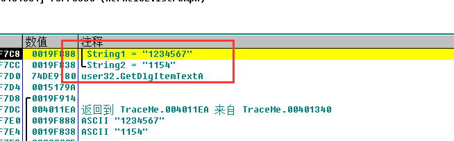</p>
<p>验证，输入用户名”12345”和序列号”1154”<br>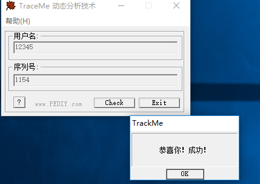</p>
<hr>
<h2 id="换一种思路"><a href="#换一种思路" class="headerlink" title="换一种思路"></a>换一种思路</h2><p>以上是通过找到用户名相对应的序列号达到破解的目的，接下来，我们换一种思路。如果我们改变了跳转的条件或者不让其进行跳转，是否可以达到同样的效果。</p>
<p>首先，OD加载样本，找到字符串”GetDlgItemTextA”出现的位置，设置断点，运行，随机输入字符串。<br>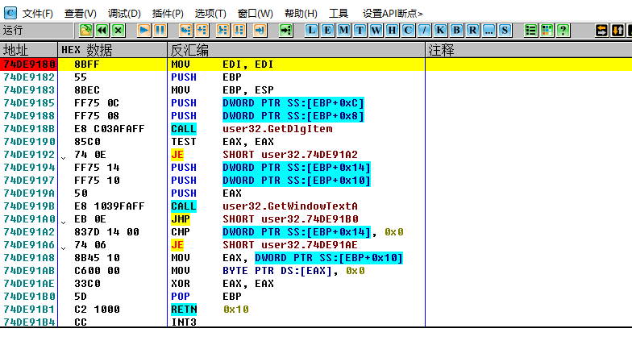<br>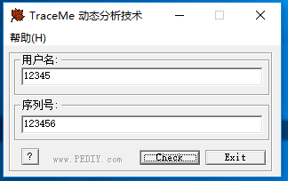</p>
<p>接下来，进行单步F8调试。注意观察，我们会在调试过程中会发现有”跳转未实现”出现。由于我们输入的红用户名和序列号不是对应的，因此跳转未实现，由此，我们让跳转实现不就可以了吗？<br>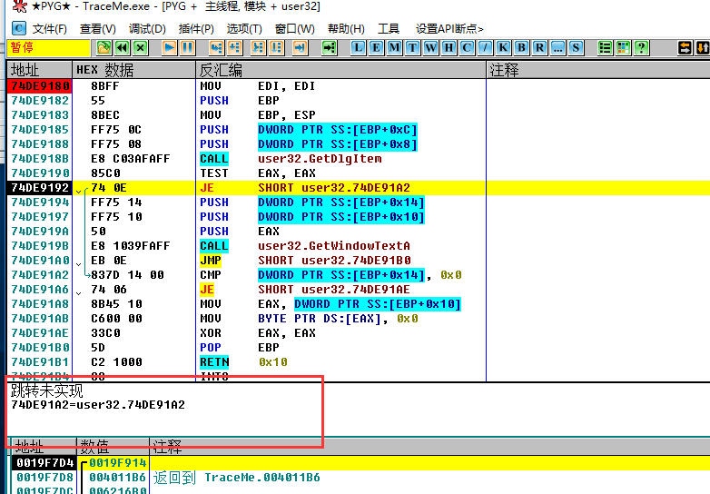</p>
<p>回到入口函数。继续单步，注意出现的“跳转以实现”字，并且条件是”JE”,我们改变条件，右键-&gt;汇编，改成”JNE”，并保存文件。<br>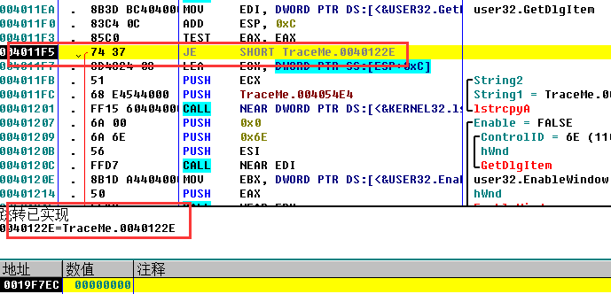<br>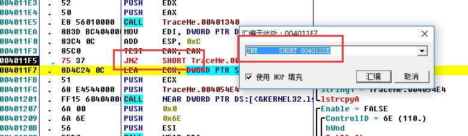</p>
<p>运行测试：<br>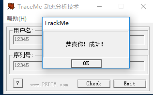</p>
</div><div class="tags"><a href="/tags/破解小程序/">破解小程序</a></div></div></div></div><div class="pure-u-1-4"><div id="sidebar"><div class="widget"><form action="//www.google.com/search" method="get" accept-charset="utf-8" id="search" target="_blank" class="search-form"><input type="text" name="q" maxlength="20" placeholder="Search"/><input type="hidden" name="sitesearch" value="https://CookieZH.github.io"/></form></div><div class="widget"><div class="widget-title"> 分类</div><ul class="category-list"><li class="category-list-item"><a class="category-list-link" href="/categories/Windows编程/">Windows编程</a><span class="category-list-count">6</span></li><li class="category-list-item"><a class="category-list-link" href="/categories/土豆芽/">土豆芽</a><span class="category-list-count">3</span></li><li class="category-list-item"><a class="category-list-link" href="/categories/逆向/">逆向</a><span class="category-list-count">2</span></li></ul></div><div class="widget"><div class="widget-title"> 标签</div><div class="tagcloud"><a href="/tags/破解小程序/" style="font-size: 18px;">破解小程序</a> <a href="/tags/VS/" style="font-size: 12px;">VS</a> <a href="/tags/DLL/" style="font-size: 12px;">DLL</a> <a href="/tags/Git/" style="font-size: 12px;">Git</a> <a href="/tags/VC/" style="font-size: 12px;">VC</a></div></div><div class="widget"><div class="widget-title"> 最新文章</div><ul class="post-list"><li class="post-list-item"><a class="post-list-link" href="/2017/08/02/windows-6/">调用DLL</a></li><li class="post-list-item"><a class="post-list-link" href="/2017/08/01/tudy-3/">VS中错误 C1902：程序数据库管理器不匹配问题</a></li><li class="post-list-item"><a class="post-list-link" href="/2017/08/01/za-2/">VC缺少dumpbin.dll的解决方法</a></li><li class="post-list-item"><a class="post-list-link" href="/2017/08/01/windows-5/">覆盖代码挂钩API</a></li><li class="post-list-item"><a class="post-list-link" href="/2017/08/01/windows-4/">远程注入DLL</a></li><li class="post-list-item"><a class="post-list-link" href="/2017/07/20/reverse-2/">破解小程序TraceMe</a></li><li class="post-list-item"><a class="post-list-link" href="/2017/07/15/za1/">Git库同步</a></li><li class="post-list-item"><a class="post-list-link" href="/2017/07/12/reverse1/">破解小程序reverseTest.exe</a></li><li class="post-list-item"><a class="post-list-link" href="/2017/07/12/Windows-3/">进程的小例子</a></li><li class="post-list-item"><a class="post-list-link" href="/2017/07/12/windows-2/">文件系统的简单例子</a></li></ul></div><div class="widget"><div class="widget-title"> 友情链接</div><ul class="links-list"><li class="links-list-item"><a href="http://www.guoyunzhe.com" title="小胖墩儿的博客" target="_blank">小胖墩儿的博客</a></li></ul></div></div></div></div><div id="footer">© <a href="/." rel="nofollow">土豆儿的博客.</a> Powered by<a rel="nofollow" target="_blank" href="https://hexo.io"> Hexo.</a> Theme<a target="_blank" href="https://github.com/7ye/maupassant-hexo"> Maupassant.</a></div><a id="back_to_top" href="javascript:void(0)" class="back_to_top"><span>△</span></a><script type="text/javascript" src="/js/totop.js?v=0.0.0"></script><link rel="stylesheet" href="/css/jquery.fancybox.css"><script type="text/javascript" src="//cdn.bootcss.com/fancybox/2.1.5/jquery.fancybox.pack.js"></script><script type="text/javascript" src="/js/fancybox.js?v=0.0.0"></script><script>function auto_code_fit(){
  if($(".highlight").length != 0){
    var pc_width = $(".post-content").width();
    $(".highlight .code").find("pre").width((pc_width-70)+"px");
  }
}
window.onresize = function(){
  auto_code_fit();
}
auto_code_fit();</script></div></body>